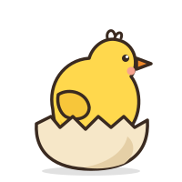
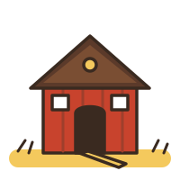
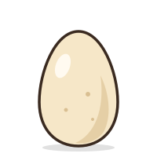

Курка свійська – найпоширеніший вид свійської птиці у світі та на Вінниччини. Кур тримають заради яєць і м'яса, вони невибагливі, швидко розмножуються і добре почуваються як у великих господарствах, так і в невеликому сільському дворі.
Походження
Предком свійської курки вважають банківську, або червону джунглеву, курку, яка й досі живе в лісах Південно-Східної Азії. Людина одомашнила її кілька тисяч років тому, і відтоді кури поширилися по всьому світу. Сьогодні відомі сотні порід, а в Україні виведено, зокрема, полтавську глинясту породу.
Зовнішній вигляд
Курка має щільний тулуб, короткі крила і міцні ноги з чотирма пальцями. На голові – м'ясистий червоний гребінь, під дзьобом – сережки. Півень помітно більший за курку, має пишніший гребінь, яскраве пір'я та довгий вигнутий хвіст.
- Забарвлення: біле, руде, чорне, рябе, сріблясте – залежно від породи.
- Кури погано літають, але здатні перелетіти невисокий паркан.
- Колір шкаралупи залежить від породи, а не від корму.
Поведінка
Кури живуть гуртом, у якому встановлюється чіткий «порядок клювання»: сильніші птахи першими підходять до корму. Більшу частину дня вони порпаються в землі, шукаючи зерно, комах і хробаків, а для чищення пір'я «купаються» в сухому пилу чи золі.

Квочка дбайливо доглядає курчат: кличе їх до знайденого корму і ховає під крила від холоду та небезпеки. Курчата вилуплюються вкритими пухом і вже за кілька годин бігають за мамою.
Утримання і догляд

Житло
Курник має бути сухим, світлим, без протягів, але з вентиляцією. Орієнтовно на 1 м² підлоги тримають 4–5 курей. Сідала роблять на висоті 60–90 см, приблизно 20–25 см жердини на птаха, а одне гніздо облаштовують на 4–5 несучок у затишному затемненому куті.
Годування
- Основа раціону – зерно (пшениця, кукурудза, ячмінь) і комбікорм.
- Улітку – багато зелені: трава, конюшина, кропива.
- Крейда, черепашник і дрібний гравій – для міцної шкаралупи й перетирання їжі.
- Не можна давати запліснявілий корм, солоне та залишки страв зі спеціями.
Вода і вигул
Чиста вода має бути доступна постійно, поїлки миють щодня. Щоденний вигул на сонці зміцнює здоров'я і покращує несучість; вигульний дворик огороджують сіткою від собак, лисиць і хижих птахів.
Догляд протягом року
- Весна: виведення курчат, прибирання й дезінфекція курника.
- Літо: тінь і вдосталь води у спеку, щоденне збирання яєць.
- Осінь: линька – більше білкового корму; утеплення курника.
- Зима: досвічування до 14 годин світлового дня, суха підстилка, жодних протягів.
Продуктивність
За призначенням породи кур поділяють на три групи:
- яєчні – легкі, несуть 250–300 яєць на рік;
- м'ясні – важкі, швидко набирають вагу;
- м'ясо-яєчні – універсальні, найпоширеніші в домашніх господарствах.

Курка починає нестися у віці 5–6 місяців. Найвища несучість припадає на перший-другий рік, після чого поступово знижується. Узимку несучість падає через короткий світловий день, тому господарі часто досвічують курник.
Цікаві факти
- Курка не має зубів: їжу перетирають дрібні камінці в її м'язовому шлунку.
- Курча починає подавати голос ще в яйці, а квочка відповідає йому.
- Півні кукурікають не лише на світанку, а й протягом усього дня.